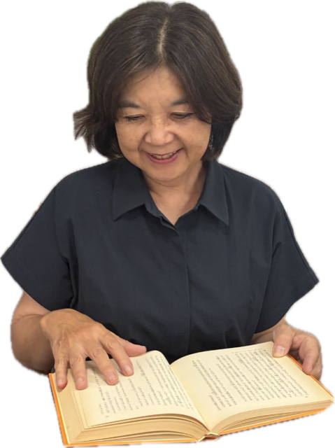

子どもを叱りすぎた日に、親ができること｜後悔を次の一言に変える3つの方法
強い言い方をしてしまって、子どもが黙りこんだ。寝顔を見ながら「なんであんな言い方をしたんだろう」と落ち込む——。そんな夜はありませんか。
叱りすぎた日は、取り返しのつかない失敗ではありません。そのあとの関わり方しだいで、親子の信頼を深めるきっかけにもなります。
3人の子育てと、塾長として30年、親子を見てきた中で大切にしていることを、脳のしくみ・発達心理学と、講座生の親子の実例をまじえてお伝えします。
まずは、わが家でチェックしてみよう
- 叱りすぎたあと、そのままにしてしまうことがある？
- 叱っているとき「何を伝えたいか」を考えられている？
- 子どもが何に引っかかったのか、聞いたことがある？
ひとつでも当てはまったら、この記事がヒントになるはずです。
この記事でわかること
- 強く叱っても、子どもに届かない「脳のしくみ」
- 叱りすぎたあとにかける、たった一言
- 「叱る」と「怒る」の違いと、個性タイプ別の受け止め方
- 声かけを変えて、子どもが明るく話すようになった講座生の実例
01みほ先生にも「言いすぎた」日はありました
今日も強く叱りすぎてしまいました。先生でも、そんなことはありましたか？
 みほ先生
みほ先生あります。そんなときは、あとで子どもに「ちょっとイライラして、言いすぎてごめん」とあやまりました。
3人の子どもを全員東大に送り出したみほ先生でも、言いすぎてしまう日はありました。大切なのは、言いすぎないことより、そのあとにどう向き合うかです。
02強く叱っても届かないのは「脳のしくみ」のせい
強く叱ったのに、子どもには少しも伝わっていない。それは、子どもの聞く気がないからではありません。脳のしくみが関係しています。
脳のしくみ
アクセルは早くからよく働くのに、ブレーキはゆっくり育つ。脳は後ろの方から前の方へと育ち、考えたり気持ちをおさえたりする部分は後のほうに育つからです。だから子どもは大人より、気持ちのブレーキがききにくいのです。
Gogtay ほか（2004）PNAS図1強く叱られたとき、子どもの頭の中では
強いストレスで、前頭前野の働きが弱まり、扁桃体の働きが強まることがわかっています（Arnsten, 2009）。
そのうえ、強い言葉が続くと、親子の間で悪い流れができやすくなることも、研究で示されています。
📖 研究でわかっていること
親の強い言葉と、子どもの反抗・落ち込み
① 親の強い言葉が、子どもを変える
② 子どもの反抗が、親を変える
「怒鳴る・ののしる」といった強い言葉と、子どもの反抗は、おたがいに強め合っていました。どちらかが止めないと、悪い流れが続きやすいのです。
Wang & Kenny（2014）Child Development図2強い言葉の悪循環と、それを止めるところ
自分を責めすぎないで
研究で言う「強い言葉」は、怒鳴ったり、ののしったりすることが日常的に続く状態のことです。一度言いすぎたからといって、子どもを傷つけてしまったと自分を責めすぎる必要はありません。
03方法1：気づいたときに「言いすぎた、ごめんね」と伝える

いつでも、気づいたときに「言いすぎた、ごめんね」と素直に伝えるといいです。
あやまるのに、ちょうどいいタイミングはありません。すぐでも、時間がたってからでも大丈夫です。みほ先生がすすめる一言は、これです。
「親があやまったら、示しがつかないのでは」と思うかもしれません。でも、あやまるのは「強い言い方」についてです。叱った中身まで取り消すわけではありません。
発達心理学では
発達心理学の「愛着（アタッチメント）」の考え方では、子どもにとって親は、こわいときに戻ってこられる「安全基地」です。安全基地があるから、子どもは安心して外の世界に挑戦できます。
親子の気持ちのすれ違いは、ごく日常的に起きています。大切なのはすれ違わないことではなく、すれ違いを「修復」すること。「ごめんね」は、安全基地を元どおりにする修復の一言です。
📖 研究でわかっていること
あやまり方で、子どもの受け止め方は変わる
同じ「ごめん」でも、言い訳をまぜるより、子どもがどんな気持ちになったかに目を向けるほうが、子どもの心が満たされる感覚と結びついていました。
Robichaud, Mageau ほか（2025）Journal of Experimental Child Psychology04方法2：「私は何を伝えたかったんだろう」と考える

叱るときは「この子に何を伝えたいか」が先にあります。怒っているときは「もう我慢できない」という自分の気持ちが先に出ます。
図3「怒る」と「叱る」のちがい
- 先にあるもの
- もう我慢できない、という自分の気持ち
- 目が向いている先
- 自分のイライラ
- 先にあるもの
- この子に何を伝えたいか
- 目が向いている先
- 子ども
脳のしくみ
イライラしているとき、ブレーキ役の前頭前野が働きにくくなるのは、大人も同じです。「もう我慢できない」と怒っているときは、親の脳でもアクセルが強く、ブレーキが弱くなっている状態。だから、言うつもりのなかった強い言葉が出てしまうのです。
Arnsten（2009）Nature Reviews Neuroscienceみほ先生のポイント
言いすぎたと思ったら、「私は何を伝えたかったんだろう」と考えると、次にかける言葉が見えてきます。
たとえば「宿題をしなかったこと」に怒ったなら、本当に伝えたかったのは「やると決めたことは守ってほしい」かもしれません。気持ちが落ち着いてブレーキが戻ってから、「ごめんね」のあとにそれを短く伝え直せば、子どもの頭にも入りやすくなります。
05方法3：子どもが「何に引っかかったか」を聞いてみる
みほ先生同じ言葉でも、どこが心に残るかは子どもによって違います。
図4個性タイプ別：叱られたときに心に残りやすいところ
気になるところどうしてダメだったのか
あとで話すときは理由を落ち着いて話し直す
気になるところ声の強さや表情
あとで話すときはまず「強い声でごめんね」
気になるところ次はどうすればいいか
あとで話すときは次にどうするかを一緒に決める
気になるところ自分で決められる余地があるか
あとで話すときは「どうしたらいいと思う？」と聞く
みほ先生タイプは一つの目安です。目の前の子が何に引っかかったのかを聞いてみると、その子の受け止め方が見えてきます。
06講座生の実例：叱るのをやめて「頼む」に変えたら
お悩み：小学生のお子さんが、タブレットばかり見て何もしない。
「タブレットばかり見ないの！」と叱りたくなる場面です。みほ先生がお伝えしたのは、叱るのではなく、次の2つでした。
図5みほ先生がお伝えしたこと
- お手伝いを頼む「〇〇ちゃんがやってくれると、ママ助かるなぁ」と、うまく頼む
- 好きなことに向かえるように仕向けるその子が好きな書写や、絵を描くことに誘う
みほ先生に教えていただき、娘への考え方と声かけが変わりました。娘が以前より明るく、たくさん話してくれるようになってきています。
※講座生の方からいただいたLINEを、お名前を伏せて一部言いかえて紹介しています。
図6この親子で変わったこと
- 親
- 何もしないことに悩む
- 子ども
- タブレットばかり見て、何もしない
- 親
- お手伝いを頼む／好きなことに誘う
- 子ども
- 明るく、たくさん話すように
叱る場面そのものを減らし、子どもが「自分は役に立てる」「これが好き」と感じられる方へ声をかける。脳のしくみで言えば、警報（扁桃体）を鳴らさずに、子どもが自分から動ける場面をつくる関わり方です。
07叱りすぎた日の「立て直し」4ステップ
図73つの方法を、1日の流れにすると
- 「言いすぎた」と気づく寝る前でも、次の日でもOK
- 「さっきは強い言い方をしてごめんね」あやまるのは「言い方」。叱った中身は取り消さない
- 伝えたかったことを、落ち着いて伝え直すブレーキが戻ってから、短く
- 「何がいやだった？」と聞いてみるその子の受け止め方がわかり、次の声かけに生かせる
まとめ：叱りすぎた日にできること
- 気づいたときに「さっきは強い言い方をしてごめんね」と伝える
- 「私は何を伝えたかったんだろう」と考えて、落ち着いてから伝え直す
- 子どもが何に引っかかったのかを聞いてみる
言いすぎない親を目指すより、言いすぎたあとに立て直せる親を目指すほうが、ずっと現実的です。落ち込みすぎず、次の一言につなげていきましょう。
参考にした研究・本
- Gogtay, N., et al. (2004). Dynamic mapping of human cortical development during childhood through early adulthood. PNAS, 101(21), 8174–8179. 論文を読む
- Arnsten, A. F. T. (2009). Stress signalling pathways that impair prefrontal cortex structure and function. Nature Reviews Neuroscience, 10(6), 410–422. 論文を読む
- Wang, M.-T., & Kenny, S. (2014). Longitudinal links between fathers' and mothers' harsh verbal discipline and adolescents' conduct problems and depressive symptoms. Child Development, 85(3), 908–923. 論文を読む
- Bowlby, J. (1988). A Secure Base: Parent-Child Attachment and Healthy Human Development. Basic Books.
- Tronick, E. Z. (1989). Emotions and emotional communication in infants. American Psychologist, 44(2), 112–119.
- Robichaud, J.-M., Mageau, G. A., et al. (2025). Parental apologies as a potential determinant of adolescents' basic psychological needs satisfaction and frustration. Journal of Experimental Child Psychology, 254, 106204. 論文を読む